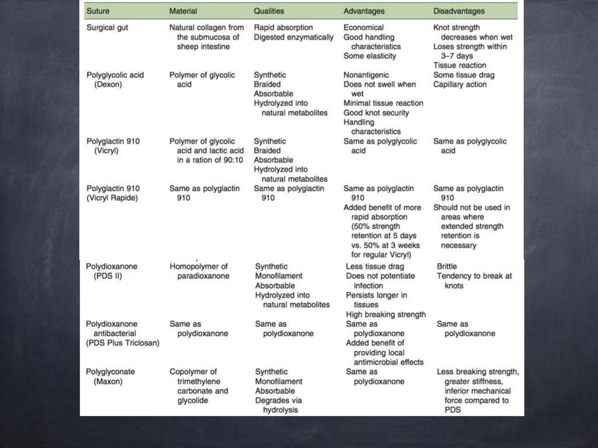
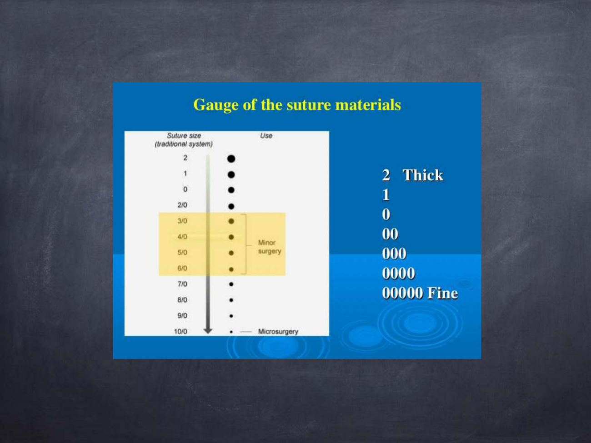
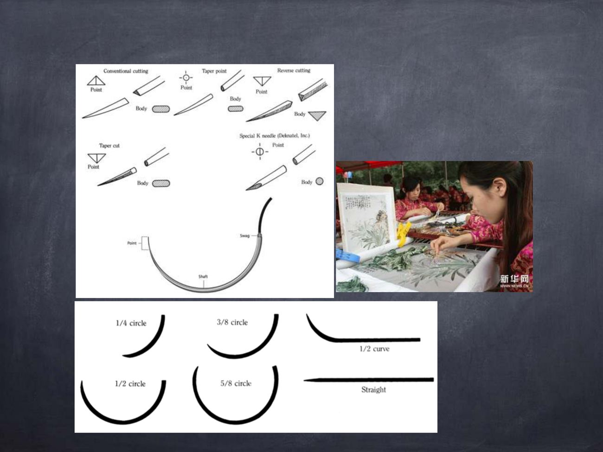
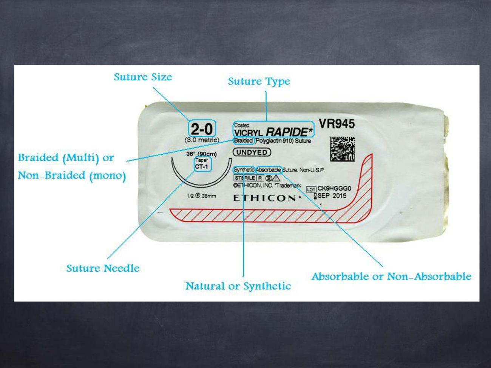

縫線材質總論
本份為第 1 週實習講義〈Suture materials, needle, knots and ligatures〉整理，聚焦於縫線材質、縫合針、縫合模式的選擇邏輯，與課堂講義〈術前考量與麻醉〉互為當週的理論／實作兩份文件（講義 p.1–4）。
內容以余品奐老師的講義為主體（講義多為關鍵字，p.N 可在右側開講義看原圖）。藍框「余品奐老師上課補充（共筆）」取自 B06 共筆（2020 年同一位老師講同一份投影片），用來解釋講義關鍵字背後的理由；標「補充」的是講義與共筆都沒有的延伸。圖片為老師講義截圖。
理想縫線的特性理解
- 對組織造成最小的反應（minimal tissue reaction）
- 不會製造有利細菌生長的環境
- 不導電（nonelectrolytic）、不具毛細作用（noncapillary）、不致敏（nonallergenic）、不致癌（noncarcinogenic）
- 操作手感佳，外科醫師使用舒適
- 打結牢固，不會割斷或磨損
- 不再需要時能自行消失
- 經濟實惠
前三項是「病患端」的條件：刺激性小（大動物覺得癢會去破壞傷口與線結）、不藏污納垢（早期用會吸水的棉線，吸了血或糞尿就變成培養基）、毛細現象小、能撐到傷口癒合；後面是「手術者端」：好操作、切割力不要強到割開組織、達到目的後消失（縫線本身是異物）、便宜。一條線不可能全部符合，要取捨。
可吸收 vs. 不可吸收必考
- 透過水解（hydrolyzed）分解
- 傷口癒合後即消失，不需拆線
- 保留張力強度超過 60 天
- 需另外拆線或永久留在體內（補充）
可吸收線通常約兩個月後水解消失，但速度看環境：泡在腹腔等潮濕環境水解較快，縫皮膚表面較慢。不可吸收線張力一直都在，用在癒合慢或預期癒合不佳、張力大的地方，例如四肢末端或臉部傷口；肌腱、韌帶血液循環差、癒合慢，也優先用不可吸收線（工作動物如水牛、馬需要更強的張力）。
縫線結構 Suture Structure
依線材的物理結構分為多股（multifilament）與單股（monofilament），兩者在細菌親和性與組織拖曳感上有明顯差異（講義 p.5）。
由多股細絲絞合（twisted）或編織（braided）而成。
股與股之間的縫隙容易藏匿細菌，可能加重感染（harbor bacteria and potentiate infection）。
通常為合成材質，線體本身為單一實心纖維。
組織反應較小、毛細作用（capillarity）較低，較不利細菌沿線體擴散。
多股線像綁辮子，纏繞的空隙是細菌滋生的地方，表面積大、刺激性也強，所以容易接觸到細菌的地方不適合——例如牛的腳，牛一趴下就碰到糞便。單股線表面積小、刺激小、沒有藏菌空間，所以現在多用單股線。
縫線材質比較表
臨床常見縫線材質的成分、特性與優缺點比較，是選擇縫線的核心依據（講義 p.10 表格，下表為中譯）。
| 縫線 | 材質 | 特性 | 優點 | 缺點 |
|---|---|---|---|---|
| Surgical gut 手術腸線 |
來自羊小腸黏膜下層的天然膠原蛋白 | 快速吸收；經酵素消化 | 經濟、操作手感佳、略有彈性 | 潮濕時打結強度下降；3–7 天內即失去強度；組織反應較大 |
| Polyglycolic acid （Dexon） |
glycolic acid 聚合物 | 合成、編織、可吸收；水解為天然代謝物 | 不致敏、遇濕不腫脹、組織反應小、打結牢固、操作手感佳 | 有組織拖曳感（tissue drag）、具毛細作用 |
| Polyglactin 910 （Vicryl） |
glycolic acid 與 lactic acid 以 90:10 比例聚合 | 合成、編織、可吸收；水解為天然代謝物 | 同 Polyglycolic acid | 同 Polyglycolic acid |
| Polyglactin 910 （Vicryl Rapide） |
同 Polyglactin 910 | 同 Polyglactin 910 | 吸收更快（5 天強度剩 50%，一般 Vicryl 為 3 週） | 不可用於需要長時間維持強度的部位 |
| Polydioxanone （PDS II） |
paradioxanone 均聚物 | 合成、單股、可吸收；水解為天然代謝物 | 組織拖曳感小、較不易加重感染、體內維持時間長、斷裂強度高 | 質地較脆、打結處容易斷裂 |
| Polydioxanone antibacterial （PDS Plus / Triclosan） |
同 Polydioxanone | 同 Polydioxanone | 同 Polydioxanone，額外提供局部抗菌效果 | 同 Polydioxanone |
| Polyglyconate （Maxon） |
trimethylene carbonate 與 glycolide 共聚物 | 合成、單股、可吸收；經水解降解 | 同 Polydioxanone | 斷裂強度較低、質地較硬、機械性質略遜於 PDS |

表中唯一的天然縫線是 surgical gut（羊小腸黏膜下層膠原，經酵素消化、3–7 天失去強度）；其餘都是合成、經水解。編織的：Dexon、Vicryl（毛細作用、tissue drag）；單股的：PDS、Maxon（PDS 脆、打結處易斷；Maxon 強度與硬度不如 PDS）。
縫線的選擇 Choice of Suture Material
選擇縫線並非單看材質優劣，而是綜合手術者經驗、組織癒合特性、動物個體因素與傷口情境的整體判斷（講義 p.6–7）。
基本考量因子理解
- 外科醫師的經驗
- 對受縫組織／器官癒合特性的了解
- 對各種縫線材質物理／生物特性的了解
- 動物因子：年齡、體重、整體健康狀況、是否有感染
年輕動物癒合快，適合可吸收線，但活動力強，需要較粗的線；越胖的動物腹壁承受的壓力越大（站起來時內臟往腹壁壓、呼吸時胸腔擴張），線要撐得住；有感染時不適合多股線。
癒合速度理解
內臟傷口（visceral wound）與表淺傷口（superficial wound）通常癒合快速，縫線不需長時間維持張力。
結晶尿（Crystalloid）存在的部位必考
膀胱（bladder）手術須留意——某些縫線材質可能成為尿路結石（urinary calculus）形成的核心，選線時需特別考量。
例如膀胱結石的動物開刀取石後，若線頭露在黏膜面（膀胱內側），結晶會附著在縫線上越堆越大，順著縫線又長出一顆結石。所以縫膀胱只用單股線、只穿過漿膜面而不穿過黏膜面（Cushing 就是不穿透黏膜的縫法，見第 8 節）。
感染傷口（Infected wound）必考
- Chromic gut：local phagocytic activity（講義只寫這兩個關鍵字，意思見下方老師的說明）
- 編織／多股線（braided or multifilament suture）：容易藏匿細菌（bacterial harboring），感染傷口應避免使用，優先考慮單股線
一般來說感染的傷口不縫合，縫起來等於把髒東西關在裡面。例外：傷口開放會感染得更嚴重時，縫合並放引流管；或傷口太大，縫幾針把傷口縮小。非縫不可時，生物性材質（如 chromic gut）優於合成材質：生物材質會刺激局部吞噬作用（phagocytic activity），縫線消失得快，身體較能適應。
※ 舊版本頁面把這點寫成「chromic gut 感染傷口使用需謹慎」，與老師上課的解釋相反，已更正。
讀書補充Note - 感染傷口：為什麼不縫？chromic gut 為什麼反而被推薦？
先講結論
感染傷口原則上不縫；非縫不可時，用單股線，並優先選生物性材質（如 chromic gut）。（講義只寫「Chromic gut：local phagocytic activity」與「多股線避免使用」，下面的解釋來自老師上課補充的共筆，標「補充」的是教科書常識。）
1. 為什麼原則上不縫
- 縫合會把細菌和滲出物封在傷口裡，形成密閉環境，容易變成膿瘍或蜂窩性組織炎。
- 感染傷口通常保持開放，每天清創、沖洗，讓它二期癒合。
2. 例外：什麼時候才縫
- 傷口開放會讓感染更嚴重：縫合並放引流管，讓膿液有出口。
- 傷口太大：縫幾針把傷口縮小，不完全閉合。
3. 縫線怎麼選
- 多股（編織）線要避免：股與股之間的縫隙會藏細菌。細菌約 1 µm，躲進縫隙後，嗜中性球和巨噬細胞太大進不去（補充），細菌就能在裡面持續增生。
- 單股線優先：表面光滑、沒有藏菌空間。
- Chromic gut（生物性材質）：
- 它是膠原蛋白製成，身體會把它當成要清掉的東西，由巨噬細胞吞噬、用酵素分解。
- 這個作用會刺激局部吞噬細胞聚集，對清除細菌有幫助（老師的說法）。
- 吸收得快，留在感染環境裡的異物少；合成不可吸收線會一直留著，成為細菌附著處。
4. 兩種說法的落差
外科教科書對 gut 有相反的提醒（補充）：它引起的組織反應比合成可吸收線強；感染環境中酵素活性高，強度會很快流失，傷口可能還沒癒合就失去支撐。老師強調的是「不留異物、能被吞噬」，教科書強調的是「強度不可靠」。考試以老師的說法作答；想確認的話可以向老師求證。
讀書補充Note - 什麼時候要用多股線？
先講結論
乾淨、無感染、不容易碰到污物的部位，多股線可以用，而且手感和結的牢固度比較好。感染、污染或容易碰到糞便的地方，才避免多股線。（講義與共筆只講了「避免」這一側，下面「適合用」的部分是外科通則補充，不是老師特別強調的重點。）
1. 多股線的優點（補充）
- 柔軟、好操作，比較沒有單股線那種彎曲捲回的記憶性。
- 結比較牢，不容易鬆開，打結安全性高。
- 表面較粗糙、有摩擦力，縫的時候不容易滑。
2. 適合用的時機（補充）
- 乾淨、無菌的手術部位：肌肉層、筋膜層的縫合。
- 結紮血管：需要打牢結，手感好的線比較方便。
- 被軟組織包住的深層縫合（例如皮下層）：細菌接觸風險低。
3. 常見的多股線材質（補充）
- Silk（絲線）：手感最好，但吸水、有毛細現象，容易吸附細菌。
- Polyglactin 910（Vicryl）：編織型可吸收線，軟組織縫合與結紮很常用，組織反應比 gut 小。
- Polyester：編織型不可吸收線，用在需要長期支撐的位置。
4. 避免多股線的情況（講義與共筆）
- 感染傷口（講義 p.7）。
- 容易接觸細菌的地方，例如牛的腳，牛一趴下就碰到糞便（共筆）。
- 膀胱縫合：只用單股線，避免結晶附著在縫線上形成結石。
判斷方式：這個部位會不會有細菌？乾淨、會被包住：多股可以。髒、感染、碰糞便、會接觸尿液：單股。
縫線尺寸 Size Does Matter
縫線尺寸的選擇原則：夠用就好，越細越好（講義 p.8–9）。
公認的外科操作原則是：使用足以牢牢固定傷口組織的最小直徑縫線。
- 降低對組織的創傷（trauma）
- 縫線的張力強度不應超過組織本身的張力強度
- 過粗的縫線會增加組織反應、壓迫血液供應、延遲癒合
縫線號數（Gauge）必考
| 號數方向 | 號數範例 | 用途 |
|---|---|---|
| 越粗 ⬆ | 2、1、0 | Thick，一般大動物大範圍組織／張力較大部位 |
| 中等 | 00、000、0000 | 一般軟組織縫合 |
| 偏細 | 3/0–6/0 | Minor surgery，小範圍精細縫合 |
| 越細 ⬇ | 7/0–10/0 | Fine，顯微手術（microsurgery） |
※ 傳統系統（traditional system）號數越多「0」，代表線徑越細；數字（如 2、1）越大代表線徑越粗。

越細的線刺激越小、穿刺傷越少（縫皮膚感覺不出來，縫眼睛、角膜就差很多）；縫太緊、張力太大、線太粗都會壓迫血液循環導致癒合不良。
縫合針 Needles
縫合針的選擇同樣要對應組織種類：質地堅韌的皮膚需要能切割的針尖，脆弱的內臟組織則需要能撥開而非切割的針尖（講義 p.11–12）。
理想縫合針特性
- 以最小的阻力與創傷穿過組織
- 堅硬（rigid）：防止彎曲
- 有彈性（flexible）：防止斷裂
- 清潔且抗腐蝕
針尖型態（Point Type）必考

| 針尖型態 | 特徵 | 臨床補充：常見適用情境 |
|---|---|---|
| Conventional cutting 傳統切割針 | 三角形斷面，切割刃朝向縫線內側（凹面） | 皮膚等緻密組織；若操作方向不當，切割刃朝內容易反向撕裂組織，臨床已逐漸少用 |
| Reverse cutting 反向切割針 | 三角形斷面，切割刃朝向縫線外側（凸面） | 目前皮膚縫合最常用的切割針，較不易造成組織撕裂 |
| Taper point 圓針 | 針體為圓形，無切割刃，以推開方式穿過組織 | 容易穿透的組織，如筋膜、肌肉、腸胃道、皮下組織；創傷最小 |
| Taper cut | 針體為圓形（taper），但針尖具切割刃 | 質地較韌但仍需降低創傷的組織，如肌腱、緻密筋膜 |
| Special K needle （Deknatel Inc.） | 反向切割針的變化型，切割幾何設計更有效率 | 特定廠牌設計，用途與 reverse cutting 相近 |
針的目的是帶線穿過組織（線本身沒有切割力）。尖端利但截面是圓的＝圓針，容易穿入；尖端利、截面也能切割＝角針，才適合反芻動物又厚又硬的皮膚。前細後粗的針穿過後洞會越來越大，不適合用在膀胱（可能滲漏）。整體越彎的針迴轉半徑越小，能在越小的空間操作。現在針已不重複使用。
針體形狀（Body Shape）看過
講義只有弧度圖（p.12），下方各弧度的用途為補充。
弧度最小，用於表淺、容易接近的部位
最常用的通用弧度，皮膚／皮下組織
深部或空間受限部位，操作控制性較佳
非常深或狹小空間，如骨盆腔、口腔
特殊用途，如眼科手術
不需持針器、徒手操作，用於皮膚或特定腸道/肌腱修補技術
針的解剖構造
縫合針由三部分組成：Point（針尖）、Shaft／Body（針體）、Swag（含線端／針線接合處）。目前臨床多使用 swaged-on（針線一體）縫合針，減少穿針孔造成的額外組織創傷。
判讀縫線包裝標示
臨床取用縫線前，務必核對包裝上的完整標示，避免拿錯材質、尺寸或針型。以 Vicryl Rapide 2-0 包裝為例（講義 p.13）：

| 標示項目 | 範例判讀 |
|---|---|
| Suture Size 縫線尺寸 | 2-0（公制 3.0 metric） |
| Suture Type 縫線種類 | Vicryl Rapide（Polyglactin 910） |
| Braided or Non-braided 編織或非編織 | Braided（編織／多股） |
| Natural or Synthetic 天然或合成 | Synthetic（合成） |
| Absorbable or Non-absorbable 可吸收或不可吸收 | Absorbable（可吸收） |
| Suture Needle 縫合針 | CT-1，Taper，1/2 circle，36 mm |
包裝上同時會標示縫線長度（如 36"／90 cm）、是否染色（undyed）、滅菌狀態（sterile）與批號效期，取用前建議養成核對習慣。
縫合模式 Suture Patterns
依傷口部位、張力需求與組織特性選擇適合的縫合模式，是縫合技術的核心判斷（講義 p.14–22）。
單純縫合（Simple Patterns）必考
- 最廣泛使用的縫合模式
- 使傷口邊緣互相對合（appose wound margins）
- 縫線之間的間距，應為縫合點到傷口邊緣距離的兩倍（bite ratio 概念）
- 具彈性（elastic suture）
- 若連續線中任一針斷裂，整條縫線的張力都會喪失
- 常用於腸道吻合（bowel anastomosis）：異物殘留少（降低污染與沾黏風險）、縫合速度較快
簡單間斷是所有縫法的基礎，重點是傷口面要對合在一起才癒合得快；針距約等於縫線橫跨傷口的距離，看起來像一個個正方形。簡單連續縫得快，但中間斷掉傷口就裂開；用在不希望太多縫線刺激或感染的地方（如縫腸子，減少縫線與組織接觸）；不能滲漏的傷口常用簡單連續搭配內翻。
張力減壓模式（Tension-Relieving Patterns）必考
- 外翻縫合（everting）
- 最佳減張效果的縫合模式
- 缺點：可能降低局部血液供應
- 適用：肌肉層對合（muscle belly reapposition）
- 相較水平褥式，血液循環較佳
- 適用：四肢裂傷（limb laceration）
水平褥式會把傷口往外翻，適合會自行內翻的組織（典型：爬蟲類皮膚切開後會往內縮），力量比簡單間斷強，可用於張力大處，也可先用 mattress 減張再用簡單間斷對合。垂直褥式的縫線與傷口垂直，而大部分血管也與傷口垂直，所以壓迫血管的機會較小，同樣可以減張。
中空器官縫合（Closure of Hollow Organ）必考
需仔細謹慎操作，以內翻或對合方式（inverting or opposing）縫合，透過纖維蛋白凝塊（fibrin clot）防止內容物滲漏（prevent leakage）。腸胃道組織強韌且柔軟（strong, pliable），子宮組織則較脆弱（friable）但癒合快速（heal quickly）。
內翻縫合模式，常用於胃（stomach）、瘤胃（rumen）、子宮（uterus）的漿膜肌層縫合；操作時需注意縫線直徑與組織厚度的搭配（diameter compromise）。
最小程度的內翻縫合，常作為雙層縫合（double layer closure）的外層；操作時須留意對血液供應的影響。
通常把對合與內翻併用避免滲漏（但刺激性強）：可第一層內翻、第二層對合，或反過來，看情況決定；兩層縫合的血液循環較差。用在會滲漏的器官，例如膀胱、子宮。Lambert 用在胃、子宮等不可滲漏的器官；Cushing 的特色是不穿過黏膜面，縫膀胱可避免結晶附著在線上形成結石。
管壁分哪幾層、每種縫法穿到哪一層，見第 9 節縫合圖解。
其他特殊縫合模式必考
環繞開口做環狀縫合並收緊，用於閉合圓形開口或固定管路（如造口周圍、腸道斷端內翻閉合）。
- 先以縫針貫穿組織後再環繞打結，防止滑脫（prevent slipping）
- 比單純結紮提供更佳的摩擦力與抗張力（friction and tensile strength）
- 操作原則：儘量減少殘留在斷端（stump）的組織量
荷包縫合可以控制洞口大小：例如食道胃管、導尿管要從皮膚穿出時，留一個管子能通過的空間並固定。貫穿結紮用在又粗又滑的束狀組織，例如大公豬去勢時的精索（或白膜）：單純結紮力量不夠，線滑掉就會大出血（見豬去勢頁）。
縫合圖解
胃、腸、膀胱、子宮這類中空器官的管壁，由外往內是漿膜 → 肌層 → 黏膜下層 → 黏膜，再往內就是管腔。縫法的差別在兩件事：切緣是「面對面」（對合）還是「往內折」（內翻），以及線有沒有穿透黏膜、露在管腔裡。（講義只寫了各縫法的名稱與用途；下面的分層、圖與 Connell 對照是補充。）
管壁四層
| 層 | 特性 | 跟縫合的關係 |
|---|---|---|
| ① 漿膜 serosa | 最外層的薄膜，光滑 | 受傷後很快產生纖維蛋白（fibrin）黏住。內翻縫合讓漿膜貼漿膜，靠 fibrin clot 封住不漏（講義 p.18 的「prevent leakage」就是這個） |
| ② 肌層 muscularis | 平滑肌，負責蠕動、收縮 | 內翻縫合都會穿過這層 |
| ③ 黏膜下層 submucosa | 膠原纖維最多，整個管壁最強韌的一層 | 縫線一定要「咬到」這層才抓得牢；只縫漿膜肌層會撕裂 |
| ④ 黏膜 mucosa | 最內層，接觸食物、尿液、乳汁 | 線穿透黏膜＝線露在管腔：細菌可沿線進出，膀胱的結晶會附著在線上形成結石 |
從切面看：線走到哪一層
- 對合（單純間斷／單純連續）：兩邊切緣面對面對齊，線可以穿全層。講義說單純連續常用在腸吻合。
- 內翻、不穿黏膜（Lambert、Cushing）：拉緊後切緣往管腔內折，外面變成漿膜貼漿膜。線只走到黏膜下層，不進管腔，所以縫膀胱用 Cushing 不會讓結晶附著。
- 內翻、穿進管腔（Connell，補充）：走法和 Cushing 一樣，但每一針都穿透黏膜。講義沒有教，放在這裡是為了對照：「不穿黏膜」正是 Cushing 和 Connell 的差別。
從上面看：Lambert 與 Cushing 差在線的方向
- Lambert：每一針垂直切口，跨過切口到對側再出來。圖畫成間斷，每針各自打結；Lambert 也可以連續縫。
- Cushing：連續縫，每一針平行切口，在切口兩側來回，線跨過切口的那段在表面。內翻程度最小。
- 雙層縫合：例如第一層用對合縫法把切緣接好，第二層用 Cushing 或 Lambert 內翻蓋在外面（講義說 Cushing 常作雙層的外層）。兩層封得最緊，但血液循環較差。
連續 Lembert 與 Cushing：差在哪？什麼時候選哪一個？
Lembert（講義寫 Lambert）可以間斷，也可以連續；連續 Lembert 和 Cushing 都是一條線縫到底、都不穿透黏膜，差別是每一針跨過切口的方向。（講義只寫 Lambert 內翻、Cushing 最小內翻，沒有說連續或間斷與選擇標準；下面是補充，自繪示意。）
- 每一針垂直跨過切口，內翻比較明顯。
- 兩側的針是從離切緣較遠處進、靠近切緣處出（藍色虛線＝埋在組織內），線在表面斜回下一針。
- 每一針平行切口，在兩側來回，線跨過切口的那段在表面。
- 內翻程度最小。
| 情況 | 選哪個 | 理由（補充） |
|---|---|---|
| 切口長，要快速密封 | Cushing（或連續 Lembert） | 連續縫比間斷快 |
| 雙層縫合的外層 | Cushing（講義 p.20） | 只需要最小內翻，蓋在第一層上面 |
| 把瘤胃錨定在切口，避免污染肌肉與腹膜 | Cushing（講義 p.19、p.22） | 連續、密合，開瘤胃時不讓內容物漏出 |
| 要更明顯的內翻、確保不滲漏（胃、子宮） | Lembert | 垂直縫法內翻比較明顯（講義 p.19） |
| 組織脆弱（例如子宮），怕連續縫的張力割傷 | 間斷 Lembert | 每一針獨立，一針鬆掉不影響其他針 |
※ 這張選擇表是依兩種縫法的特性整理的判斷邏輯，不是老師講的標準；考試以講義的用途對應為準（Lambert：胃、瘤胃、子宮；Cushing：雙層外層、瘤胃錨定與關閉、膀胱）。
縫法總覽表
一張表看完講義的 9 種縫法；圖例同下方大圖（實線在表面、藍色虛線埋在組織裡、圓點是結）。
| 縫法 | 示意圖 | 怎麼縫・優缺點・講義用途 |
|---|---|---|
| Simple interrupted 單純間斷 對合 | 每一針垂直跨過切口、各自打結；針距約邊距 2 倍 一針斷不影響其他針；較慢 用途：最基本；右側網膜固定術（網膜＋腹橫肌＋腹膜）；乳頭皮膚（p.14） | |
| Simple continuous 單純連續 對合 | 一條線縫到底，只有頭尾打結 快、留下的線少；一處斷全鬆 用途：腸吻合；開腹分層關閉（腹膜＋腹橫肌、內外斜肌）；瘤胃第一層；乳頭內兩層（p.15） | |
| Horizontal mattress 間斷水平褥式 外翻・減張 | 表面兩段線平行切口，拉緊後切緣外翻 減張最強；壓迫血流 用途：肌肉對合；開腹的皮膚關閉（p.16） | |
| Vertical mattress 垂直褥式 減張 | 同一條垂直切口的線上先遠遠（深）、再近近（淺） 減張又對合；血流比水平褥式好 用途：四肢裂傷（p.17） | |
| Near-far-far-near 近遠遠近 減張＋對合 | 一針一側近對側遠，下一針反過來，表面交叉成 X 像滑輪分散張力 用途：乳頭皮膚（乳頭講義 p.18） | |
| Lambert 內翻 | 每一針垂直切口，不穿黏膜；可間斷或連續（補充） 漿膜貼漿膜、不漏 用途：胃、瘤胃、子宮（p.19） | |
| Cushing 內翻（最小） | 連續，每一針平行切口，不穿黏膜 線不進管腔；雙層時血流較差 用途：雙層縫合外層；瘤胃固定到切口、瘤胃第二層；膀胱（p.20） | |
| Purse string 荷包縫合 環形收口 | 繞開口一圈，拉緊像束口袋 可調開口大小 用途：固定穿出的管子（胃管、導尿管）、閉合圓形開口（p.21） | |
| Transfix ligature 貫穿結紮 結紮・防滑脫 | 針先穿過組織中央綁一半，再繞整束打結 結紮線不往斷端滑脫 用途：粗滑束狀組織：大公豬精索（p.22） |
講義每一種縫法的示意圖
示意圖為自繪，不是講義原圖；各縫法的用途依講義。俯視圖：黑色虛線＝切口，實線＝線在表面，藍色虛線＝線埋在組織裡，圓點＝結。切面圖：上方是皮膚表面。
- 每一針各自打結，一針斷了不影響其他針。
- 針距約為進針點到切緣距離（邊距 a）的兩倍。
- 講義 p.14；腹腔手術：右側網膜固定術把網膜皺褶縫到腹橫肌與腹膜（3 號不可吸收線）；乳頭皮膚。
- 一條線縫到底，只有頭尾打結；快、留在組織裡的線少。
- 任何一處斷掉，整條鬆開。
- 講義 p.15；腹腔手術：腹膜＋腹橫肌、內外斜肌分層關閉，瘤胃第一層；乳頭內兩層。
- 表面的兩段線都平行切口，拉緊後切緣往外翻。
- 減張效果最好，但會壓迫血流。
- 講義 p.16；腹腔手術：皮膚關閉。
- 外表看起來像一條垂直切口的線，但其實走了兩趟：先遠遠、再近近。
- 線和大部分血管同方向（都垂直切口），比較不壓迫血流。
- 講義 p.17；四肢裂傷。
- 深的大環（遠—遠）承受張力，淺的小環（近—近）把表皮對齊。
- 一針同時做到減張和對合。
- 第一針：一側近、對側遠；第二針：一側遠、對側近。
- 表面兩段線交叉成 X，像滑輪一樣分散張力。
- 乳頭手術講義 p.18：乳頭皮膚。
- 每一針垂直切口，不穿黏膜。
- 講義 p.19：胃、瘤胃、子宮。
- 連續縫，每一針平行切口，不穿黏膜。
- 講義 p.20：雙層縫合外層；腹腔手術：瘤胃固定到切口、瘤胃第二層；膀胱。
- 繞開口一圈，拉緊就像束口袋。
- 可控制開口大小、固定穿出的管子（胃管、導尿管）。
- 講義 p.21。
- 針先穿過組織，線卡在組織裡，不會往斷端滑掉。
- 又粗又滑的束狀組織：大公豬去勢的精索。
- 講義 p.22。
對合（單純間斷、單純連續）：切緣面對面。減張（水平褥式、垂直褥式、near-far-far-near）：用在皮膚、肌肉等張力大的地方。內翻（Lambert、Cushing）：中空器官，不穿黏膜。特殊（荷包、貫穿結紮）：收口與結紮。
練習題 Practice Quiz
涵蓋縫線材質、縫合針與縫合模式重點，先自己作答再點「顯示答案」核對。
編織／多股線股與股之間的縫隙容易藏匿細菌，加重感染，感染傷口應優先選擇單股（monofilament）線，而非多股編織線。
公認的外科原則是使用「足以牢固組織的最小直徑縫線」，而非越粗越好；過粗的縫線反而會增加組織反應、壓迫血液供應、延遲癒合。
Vicryl Rapide 5 天強度即剩 50%（一般 Vicryl 約 3 週才降至此程度），吸收速度快，正因如此不應用於需要長時間維持強度的部位。
膀胱等有結晶尿（crystalloid）存在的部位，某些縫線材質可能成為尿路結石（urinary calculus）形成的核心，選線時需特別考量此風險。
Taper point 針體為圓形、無切割刃，以推開而非切割的方式穿過組織，創傷最小，適合腸胃道、筋膜、肌肉等容易穿透的軟組織；切割針（cutting）主要用於皮膚等較緻密的組織。
單純連續縫合具彈性，但若其中一針斷裂，整條縫線的張力都會喪失（並非只有局部受影響）；因異物殘留少、縫合速度快，常用於腸道吻合。張力減壓效果最佳的是間斷水平褥式縫合。
水平褥式縫合的減張效果最佳，但因縫線走向與傷口平行、包覆組織範圍較大，容易壓迫並降低局部血液供應，適用於需要對合肌肉層（muscle belly reapposition）的情況；垂直褥式縫合則因縫線走向與傷口垂直，對血液循環的影響較小，血液循環較佳，適用於四肢裂傷（limb laceration）等需要兼顧減張與血液供應的部位。
Transfix ligature 是先以縫針貫穿組織後再環繞打結，比單純環繞結紮多了組織貫穿這一步，能提供更佳的摩擦力與抗張力，防止縫線在血管或蒂部滑脫，特別適合較大、張力較高的血管蒂或組織斷端。操作原則是儘量減少殘留在斷端（stump）的組織量，避免留下過多壞死組織增加感染風險。
感染傷口原則上不縫；例外情況要縫時應放引流。講義寫「Infected wound — Chromic gut — local phagocytic activity」，老師解釋為生物材質會刺激吞噬作用、縫線消失快、身體較能適應；多股線藏菌，不適合（講義 p.7、共筆）。
線頭露在黏膜面會讓結晶附著、長出新結石（講義 p.7「presence of crystalloid — bladder — urinary calculus formation」）；前細後粗的針會讓洞越來越大而滲漏；中空器官要內翻或對合，不用外翻（共筆）。